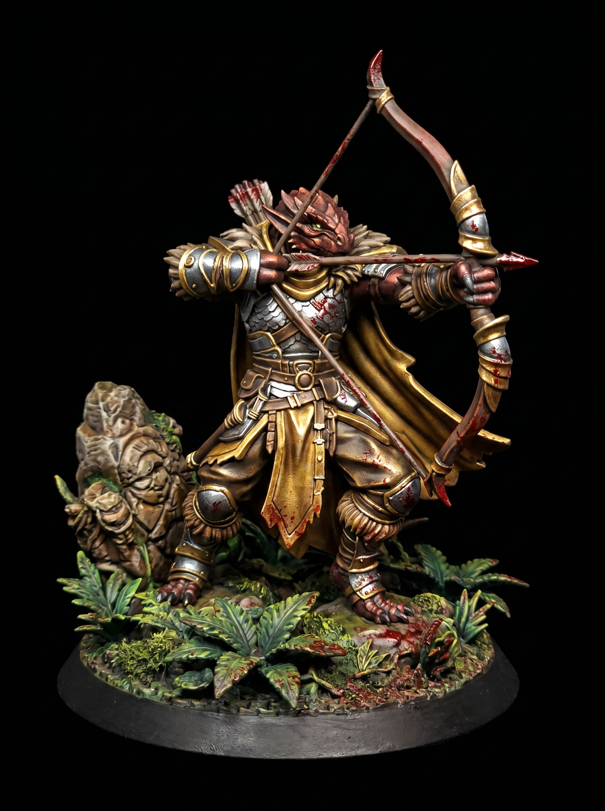

Painting Battered Steel on 3D Printed Miniatures
September 20, 2026

Start with a matte black primer. Basecoat the armor plates in a dark, cold iron. Skip bright silvers early on. A deep gunmetal gives your shadows immediate weight.
Wash the entire surface with a dark brown shade or thinned oil wash. Pull the pigment down toward the recesses and rivets. Let surface tension do the work. If you use oils, wipe the raised panels clean with a makeup sponge after twenty minutes.
Grab a scrap of packing sponge. Dip it in matte black paint, then dab most of it off onto a paper towel. Stipple the edges lightly where strikes would land. Place a tiny dot of bright silver inside the largest black chips to show fresh, exposed metal.
Finish with a selective edge highlight along the upward-facing corners. Catch only the surfaces exposed to overhead light. This quick process adds immediate grit to 3D printed miniatures and makes your tabletop RPG minis stand out across the room.
Get free miniatures:
- Fantasy: https://cults3d.com/@BattleFoundry
- Scifi: https://cults3d.com/@BATTLEFOUNDRYSCIFI
- Grimdark: https://cults3d.com/@DREADWORKS
- Resin Statue: https://cults3d.com/@BlacksiteSyndicate